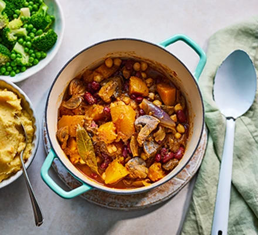

Vegan squash stew

Discription
Serve this hearty, healthy vegan stew for a comforting winter dinner. It's packed with vitamin C and contains all five of your five-a-day
ingredents
2 tbsp rapeseed oil
320g large chestnut mushrooms, quartered
2 bay leaves
2 tbsp fresh rosemary
4 red onions, quartered
4 garlic cloves, thinly sliced
320g prepared butternut squash
600ml vegetable stock, made with 1 tbsp bouillon powder
2 x 400g cans chickpeas, drained
1 tbsp smoked paprika
Method
STEP 1
Heat the oil in a large non-stick pan over a medium heat and fry the mushrooms, bay and rosemary for about 5 mins. Tip in the onions and garlic, and cook for a few minutes more until softened.
STEP 2
Add the butternut squash, stock, chickpeas, smoked paprika and tomato purée. Cover and simmer for 40 minutes until the liquid has reduced to a thick gravy.
STEP 3
About 25 mins before the end of cooking time, make the mash. Bring a large pan of water to the boil and cook the swede for 5 mins, then add the potatoes and boil for 15-20 mins until tender. Drain and mash with plenty of black pepper.
Step 5
Serve half the stew and mash now, then chill the rest to reheat and eat another day. Will keep chilled for up to three days. Reheat the stew in a pan until piping hot. The mash can be reheated in the microwave. Serve with broccoli and peas, if you like.